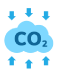

Impacts of Deforestation
Through forests make up nearly 31% of the world, they are rapidly being cut down for reasons such as agriculture and urban expansion. These same forests contribute greatly to the general health of the environment by being home to more than 80% of all land-species of animals plants and insects. Three impacts of the loss of forests stated by the UN are:
-
Disappearance of livelihoods in rural communities
-
Diminished biodiversity and degradation of land
-

Increased carbon emissions
In fact, according to UNEP, the world loses 10 million hectares of forest per year! This means that the ~30% of emissions that were previously taken in by forests and woodlands is now free to escape into the atmosphere.
Check out some solutions here: